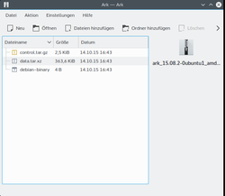

Ark
Dieser Artikel wurde für die folgenden Ubuntu-Versionen getestet:
Ubuntu 16.04 Xenial Xerus
Ubuntu 14.04 Trusty Tahr
Zum Verständnis dieses Artikels sind folgende Seiten hilfreich:
Ark ist ein Programm, um verschiedene Archiv-Formate in KDE (und bei manueller Installation auch unter anderen Desktops) zu verwalten. Archive können eingesehen, erzeugt, geändert und Dateien daraus extrahiert werden. Das Programm kann mit verschiedensten Formaten wie tar, gzip, bzip2, zip, 7z, rar und lha umgehen (sofern entsprechende Befehlszeilenprogramme installiert sind, siehe Packprogramme).
Installation¶
Ark ist standardmäßig schon in Kubuntu installiert, kann aber ggf. über das Paket
ark
 mit apturl
mit apturl
Paketliste zum Kopieren:
sudo apt-get install ark
sudo aptitude install ark
nachinstalliert werden [1].
Benutzung¶
|  |
| Ark |
Ark öffnet man über "Programme -> Dienstprogramme -> Archivprogramm (Ark)". Alternativ ist es auch möglich Ark aus dem Dateimanager über das Kontextmenü einer Archivdatei zu öffnen. Dazu wählt man im Kontextmenü den Punkt "Öffnen mit Ark". Hierbei wird direkt das Archiv in Ark geöffnet. Man kann auch ein Archiv mittels Drag&Drop in einem geöffnetes Ark Fenster öffnen. Als Ziel muss man hierbei die Öffnen Schaltfläche in der Werkzeugleiste verwenden.
Archive öffnen¶
Wie oben beschrieben, kann man ein Archiv über das Kontextmenü im Dateimanager öffnen. Wenn man Ark bereits geöffnet hat, kann man auch ein Archiv über das Menü "Datei -> Öffnen..." oder über die Schaltfläche "Öffnen" in der Werkzeugleiste öffnen. Über das Untermenü "Datei -> Zuletzt geöffnete Dateien" kann man auch direkt eine der zuletzt verwendeten Archivdateien öffnen.
Arbeiten mit Archiven und Dateien¶
Wenn ein Archiv einmal geöffnet ist, kann man auf die enthaltenen Dateien und auf das Archiv selbst verschiedene Funktionen anwenden. Dazu stehen in der Werkzeugleiste einige Funktionen zur Auswahl, die auch im Menü "Aktion" angezeigt werden. Sobald man eine Datei ausgewählt hat, werden die Funktionen für die Datei freigeschaltet. Folgende Funktionen stehen dann zur Auswahl:
| Funktion | Beschreibung |
| "Dateien hinzufügen ..." | Weitere Dateien zum Archiv hinzufügen. |
| "Ordner hinzufügen ..." | Einen Ordner zum Archiv hinzufügen. |
| "Löschen" | Entfernt die ausgewählte(n) Datei(en) aus dem Archiv. |
| "Entpacken ..." | Entpackt Dateien an einen angegebenen Ort. |
| "Vorschau" | Öffnet die Datei im integrierten Dateibetrachter. |
Ein Archiv entpacken¶
Ein in Ark geöffnetes Archiv kann entpackt werden. Dazu muss man entweder "Entpacken ..." im Menü "Aktion" oder aus der Werkzeugleiste wählen. Im Entpacken-Dialog gibt man an, wohin die Dateien entpackt werden sollen. Ebenso kann man angeben, welche Dateien entpackt werden sollen:
"Nur ausgewählte Dateien" - Entpackt alle ausgewählten Dateien.
"Alle Dateien" - Entpackt das ganze Archiv.
In welchen Ordner Dateien entpackt werden, wählt man im normalen Datei öffnen/speichern Dialog aus. Voreingestellt ist der Ordner, in dem sich auch die Archivdatei befindet. Als Option bietet sich an, den Zielordner nach dem Entpacken der Dateien direkt im Dateimanager zu öffnen.
Erzeugen von Archiven und Hinzufügen von Dateien¶
Um mit Ark ein neues Archiv zu erzeugen, wählt man "Datei -> Neu". Hier gibt man den Dateinamen an, sowie die Erweiterung für das gewünschte Archivformat (tar.gz, zip, bz2 usw.). Um einem Archiv einzelne Dateien hinzuzufügen, wählt man dann "Aktion -> Dateien hinzufügen...". Möchte man gleich ganze Ordner hinzufügen, wählt man "Aktion -> Ordner hinzufügen..." aus.
Integration in den Dateimanager¶
Ark ist auch direkt in den KDE-Dateimanagern (z.B. Dolphin und Konqueror) integriert. Ein Archiv kann über das Kontextmenü direkt entpackt werden. Dazu gibt es folgende Menüpunkte:
"Archiv hierher auspacken, Unterordner selbstständig ermitteln"
"Archiv auspacken nach ..."
"Archiv hierher auspacken"
Aus dem Dateimanager heraus kann auch ein Archiv erstellt werden. Öffnet man das Kontextmenü auf eine Datei, einen Ordner oder eine Auswahl von Dateien und Ordnern, so wird das Untermenü "Komprimieren" angeboten.
 im KDE UserBase Wiki
im KDE UserBase Wiki- Erstellt mit Inyoka
-
 2004 – 2017 ubuntuusers.de • Einige Rechte vorbehalten
2004 – 2017 ubuntuusers.de • Einige Rechte vorbehalten
Lizenz • Kontakt • Datenschutz • Impressum • Serverstatus -
Serverhousing gespendet von